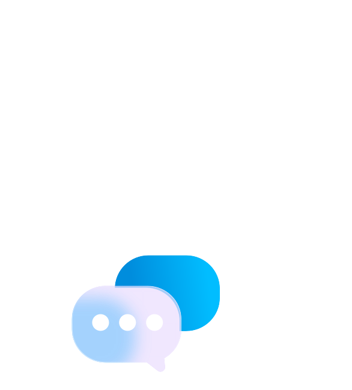
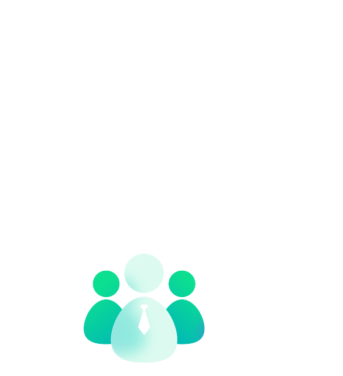

Compliances

Security
Provide SSL
encryption
DDoS mitigation
measures
Das Problem
Mitarbeiter haben oft Angst oder sind nicht in der Lage, Probleme zu kommunizieren und reflektieren nicht aktiv Lösungen und die notwendigen Strategien. Dies führt zu aufgestauten Emotionen und chronischem Stress.
Führungskräfte können nicht in die Köpfe ihrer Mitarbeiter schauen, daher erkennen sie nicht die wahren Ursachen von Stress und können nicht die richtigen Ressourcen oder Unterstützung bereitstellen.
Die Lösung
Unser psychologisches KI-Coaching schafft nicht nur einen sicheren Raum für anonyme Rückmeldungen, sondern unterstützt Mitarbeiter auch aktiv dabei, Stress abzubauen und effektive Lösungen zu finden.
Unsere Stressanalyse dient als psychologischer Leitfaden und als Frühwarnsystem. Sie ermöglicht es, Stressfaktoren frühzeitig zu erkennen und proaktive Maßnahmen für Ihre Mitarbeiter zu entwickeln.
Die Mindflex Vision
Mindflex revolutioniert mit wissenschaftlich fundierter psychologischer KI die mentale Gesundheit und stärkt das Wohlbefinden von Mitarbeitern weltweit.
Compliances
Security
Provide SSL
encryption
DDoS mitigation
measures
Mindflex ist eine innovative Plattform, die auf wissenschaftlich fundierter psychologischer KI basiert. Unsere Mission ist es, Unternehmen dabei zu unterstützen, die mentale Gesundheit ihrer Mitarbeiter zu fördern und ein stressfreieres, produktiveres Arbeitsumfeld zu schaffen.
Mindflex bietet maßgeschneiderte, interaktive Trainings und frühzeitiges Screening zur Stressbewältigung und Burnout-Prävention. Dadurch können Ihre Mitarbeiter besser mit Stress umgehen, was zu einer gesteigerten Produktivität, höheren Mitarbeiterbindung und verbessertem Engagement führt.
Ja, der Schutz der Daten ist für uns von höchster Priorität. Alle gesammelten Daten werden anonymisiert und DSGVO-konform gespeichert, um die Privatsphäre Ihrer Mitarbeiter zu gewährleisten.
Unsere psychologische KI leitet die Nutzer durch personalisierte Programme, die auf kognitiver Umstrukturierung basieren. Diese helfen Mitarbeitern, stressige Situationen neu zu bewerten und effektivere Lösungsansätze zu finden.